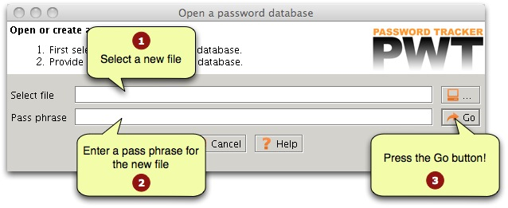

The application will ask you if it is OK to create a new database.
Press the "Yes" to create your database. The reason that the
application asks for confirmation is that you can also use the start
screen to open an existing database. If you made a mistake in the
pathname, and you do not want to create a new file, you can recover at
this point.